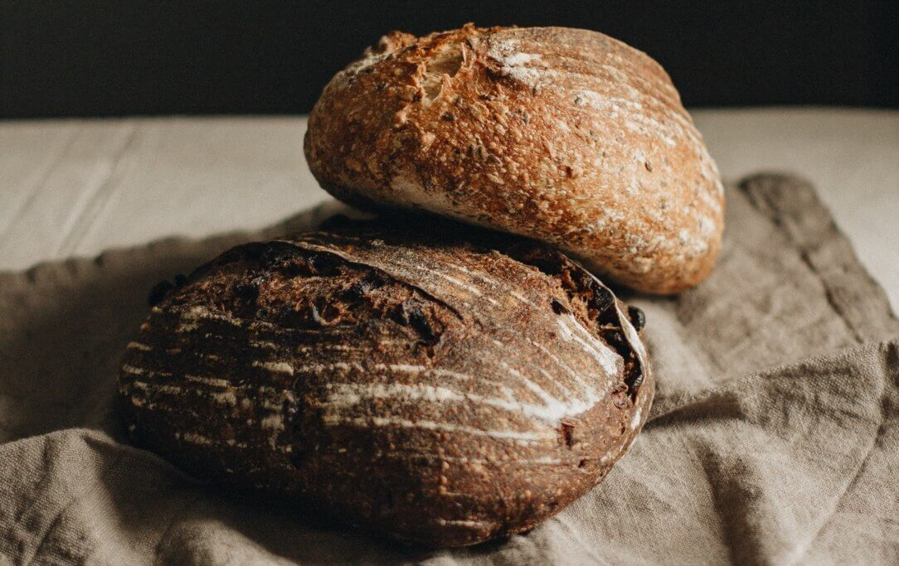
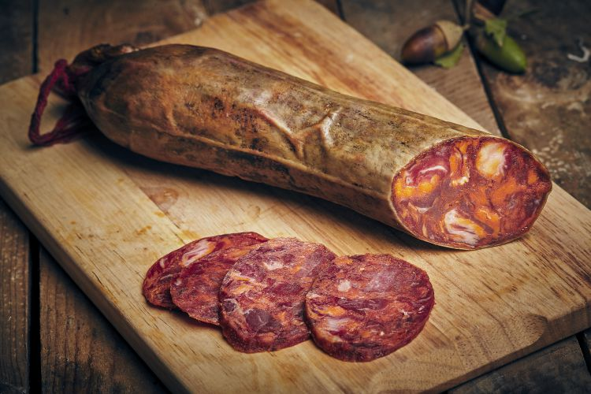
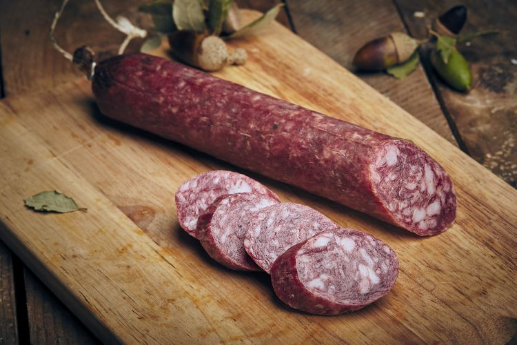
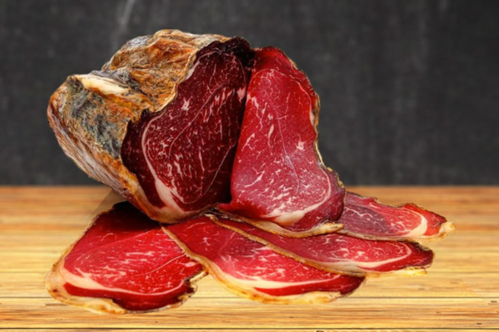

Bienvenido a Embutidos Ceide.
Combinamos tradición y calidad, ofreciendo productos artesanales con recetas familiares.

Pan
Pan recién horneado con ingredientes naturales, ideal para acompañar cualquier comida.

Chorizo
Chorizo tradicional, curado a la perfección, con un sabor auténtico y delicioso.

Salchichón
Salchichón curado con especias seleccionadas, ideal para una buena tapa o aperitivo.

Cecina
Cecina curada con una mezcla especial de hierbas, un manjar para los amantes de los embutidos.